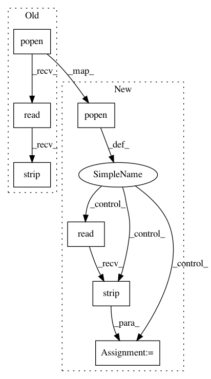

891e580bc8e66d0d81c2334c507cd1b10f93cbc2,pynets/utils.py,,reorient_dwi,#Any#Any#Any#,897
Before Change
import shutil
// Check orientation (dwi_prep)
cmd = "fslorient -getorient " + dwi_prep
orient = os.popen(cmd).read().strip("\n")
dwi_orig = dwi_prep
dwi_prep = "{}/{}_pre_reor.nii.gz".format(out_dir, dwi_prep.split("/")[-1].split(".nii.gz")[0])
shutil.copyfile(dwi_orig, dwi_prep)
bvecs_orig = bvecs
After Change
import shutil
// Check orientation (dwi_prep)
cmd = "fslorient -getorient " + dwi_prep
cmd_run = os.popen(cmd)
orient = cmd_run.read().strip("\n")
cmd_run.close()
dwi_orig = dwi_prep
dwi_prep = "{}/{}_pre_reor.nii.gz".format(out_dir, dwi_prep.split("/")[-1].split(".nii.gz")[0])
shutil.copyfile(dwi_orig, dwi_prep)
bvecs_orig = bvecs
bvecs = "{}/bvecs.bvec".format(out_dir)
shutil.copyfile(bvecs_orig, bvecs)
bvecs_mat = np.genfromtxt(bvecs)
cmd = "fslorient -getqform " + dwi_prep
cmd_run = os.popen(cmd)
qform = cmd_run.read().strip("\n")
cmd_run.close()
reoriented = False
if orient == "NEUROLOGICAL":
reoriented = True
print("Neurological (dwi), reorienting to radiological...")
// Orient dwi to RADIOLOGICAL
// Posterior-Anterior Reorientation
if float(qform.split(" ")[:-1][5]) <= 0:
dwi_prep_PA = "{}/dwi_reor_PA.nii.gz".format(out_dir)
print("Reorienting P-A flip (dwi)...")
cmd = "fslswapdim " + dwi_prep + " -x -y z " + dwi_prep_PA
os.system(cmd)
bvecs_mat[:,1] = -bvecs_mat[:,1]
cmd = "fslorient -getqform " + dwi_prep_PA
cmd_run = os.popen(cmd)
qform = cmd_run.read().strip("\n")
cmd_run.close()
dwi_prep = dwi_prep_PA
// Inferior-Superior Reorientation
if float(qform.split(" ")[:-1][10]) <= 0:
In pattern: SUPERPATTERN
Frequency: 3
Non-data size: 7
Instances
Project Name: dPys/PyNets
Commit Name: 891e580bc8e66d0d81c2334c507cd1b10f93cbc2
Time: 2019-06-09
Author: dpisner@utexas.edu
File Name: pynets/utils.py
Class Name:
Method Name: reorient_dwi
Project Name: dPys/PyNets
Commit Name: 891e580bc8e66d0d81c2334c507cd1b10f93cbc2
Time: 2019-06-09
Author: dpisner@utexas.edu
File Name: pynets/utils.py
Class Name:
Method Name: reorient_img
Project Name: home-assistant/home-assistant
Commit Name: 8bba0b88fd9329b44a53fcf43413e78ff2a55a30
Time: 2015-09-14
Author: jon@jonmaddox.com
File Name: homeassistant/__main__.py
Class Name:
Method Name: install_osx